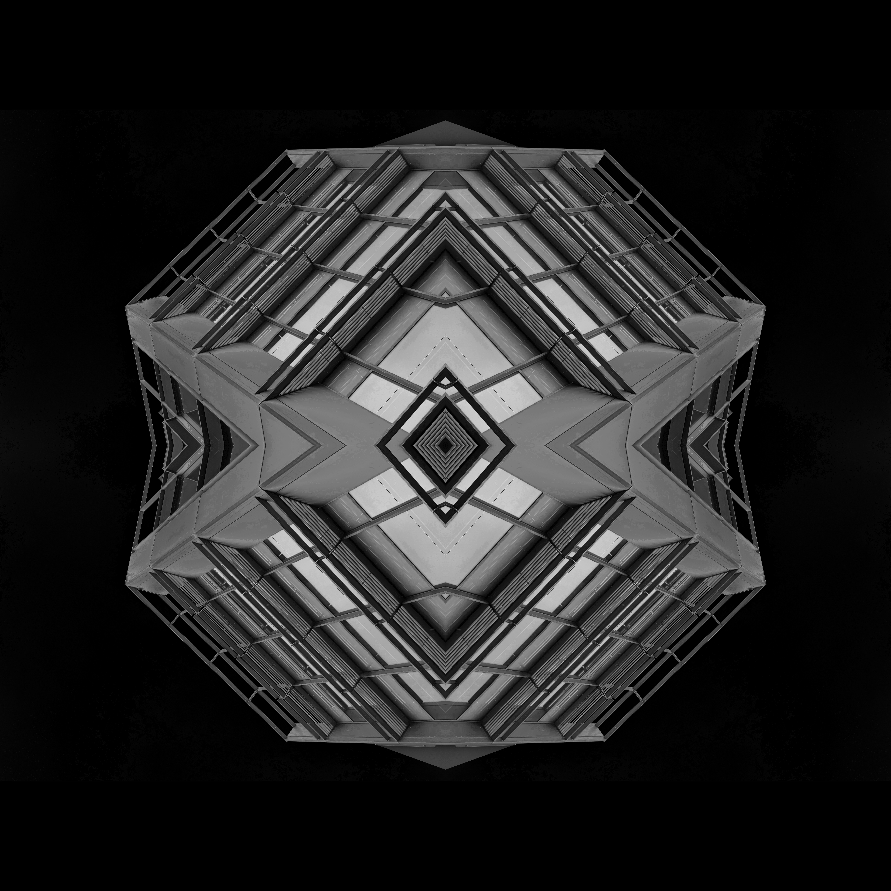

Click images to select them. Target: ~24 images across 6 themes.
Theme counts are flexible — pick more from themes that resonate, fewer from others.
Existing images (already in brand-tokens) are pre-marked. You can keep or drop them.
Total candidates: 0
Selected: 0 / ~24 target
Themes: 6
Current Images
ALREADY IN BRAND-TOKENS
These 10 images are your current set. Review them in context with the new candidates.
Keep what works, drop what doesn't. Images 03, 05, 06, 10 were flagged as weak/generic in the earlier review.
#E01
Brutalist parking spiral — raw concrete layers, industrial geometry
Existing · role: divider
divider
KEEP — strong
#E02
Monumental concrete cantilever — bold, authoritative brutalist form
Existing · role: cover, divider
coverdivider
KEEP — strong
#E03
Raw concrete surface close-up — exposed aggregate texture
Existing · role: background
background
WEAK — generic, no warmth
#E04
Industrial curved pipes — sculptural concrete forms in B&W
Existing · role: divider
divider
KEEP — sculptural
#E05
Dark woven fabric texture — not architectural
Existing · role: background
background
WEAK — doesn't fit brand world
#E06
Brushed metal surface — scratched industrial steel
Existing · role: background
background
WEAK — generic, cold
#E07
Geometric B&W architecture — stark light and shadow on tiled facade
Existing · role: cover, divider
coverdivider
KEEP — excellent
#E08
Architectural lines with rhythmic shadows — chevron geometry
Existing · role: divider, closing
dividerclosing
KEEP — connects to motifs

#E09
Symmetrical concrete kaleidoscope — geometric mandala on black
Existing · role: cover, closing
coverclosing
QUESTIONABLE — feels digitally processed
#E10
Dark asphalt surface — raw ground-level material texture
Existing · role: background
background
WEAK — low quality
1. Oxidized Infrastructure
SIGNATURE WARMTH — fills the palette gap
Rusted steel, weathered corten, iron patina on industrial surfaces. Bridges, rail yards, dock infrastructure where metal meets weather over decades. This directly sources the Oxide accent (#B96034) — warm copper-browns against dark structural forms.
Corten steel facade — tall building with oxidized panels and windows
Unsplash
coverdivider
#OX02
Corten architecture — warm brown building against sky
Unsplash
coverdivider
#OX03
Corten pyramid — geometric oxidized form with many windows
Unsplash
cover
#OX04
Corten steel tower — oxidized vertical structure, street context
Unsplash
divider
#OX05
Tall orange corten building — bold oxide tones against sky
Unsplash
coverdivider
#OX06
Low-angle brown concrete building — warm monumental form
Unsplash
divider
#OX07
Close-up rusted metal with rivets — raw oxidized detail
Unsplash
background
#OX08
Industrial staircase — corten interior, modern building
Unsplash
divider
#OX09
Rust on metal railings — warm brown patina, detailed texture
Unsplash
background
#OX10
Brown metal and concrete — industrial structure with warm patina
Unsplash
divider
#OX11
Brown concrete building — warm tones, white sky, monumental
Unsplash
coverdivider
2. Brutalist Architecture
AUTHORITY & SCALE
Bold concrete cantilevers, parking spirals, monumental forms. Desaturated, high-contrast, emphasizing mass and shadow. Already the strongest part of the current set — these candidates expand the range.
Concrete building — grayscale pattern of light and shadow
Unsplash
divider
#SH06
White concrete — clean daylight shadow lines, minimal
Unsplash
closing
#SH07
Brown concrete with warm shadows — warm-toned rhythm
Unsplash
divider
#SH08
Metal poles closeup — parallel lines, industrial rhythm
Unsplash
background
4. Workshop & Material
TACTILE WARMTH — Creator archetype
Close-up surfaces of worked materials — dark timber grain, tooled leather, hand-laid brick, scored stone, machined metal. These are warm, tactile, and human-made. They bridge the Sage's precision with the Creator's craft.
Black marble with white veins — dark premium material
Unsplash
backgroundcover
#WK06
Weathered planks with metal reinforcement — craft meets industry
Unsplash
background
#WK07
Brown and gray concrete floor — warm-toned raw surface
Unsplash
background
5. Dark Geometry
DRAMATIC ANCHORS
High-contrast architectural abstractions on near-black grounds — glass and steel at night, illuminated corridors, dark facade grids. Forest-toned overlays shift these toward the brand's dark palette naturally.
Building facade — illuminated windows at night, geometric grid
Unsplash
coverclosing
#DG03
Skyscraper shrouded in fog at night — atmospheric dark mass
Unsplash
cover
#DG04
B&W building at night — dark architectural abstraction
Unsplash
coverclosing
#DG05
Stairwell to glass building — dark interior geometry
Unsplash
divider
#DG06
Building shrouded in fog at night — moody, dark vertical
Unsplash
cover
#DG07
Building lights reflected on glass facade at night — luminous grid
Unsplash
closing
#DG08
B&W dark building — deep shadows, geometric mass
Unsplash
cover
6. Framed Urban Systems
ORCHESTRATION — Switch Track DNA
Infrastructure from a systems perspective — overhead rail switches, cable routing, pipe networks, exchange junctions. Not scenic — diagrammatic. These echo the "Intelligence, Orchestrated" positioning and connect to the Switch Track motif.